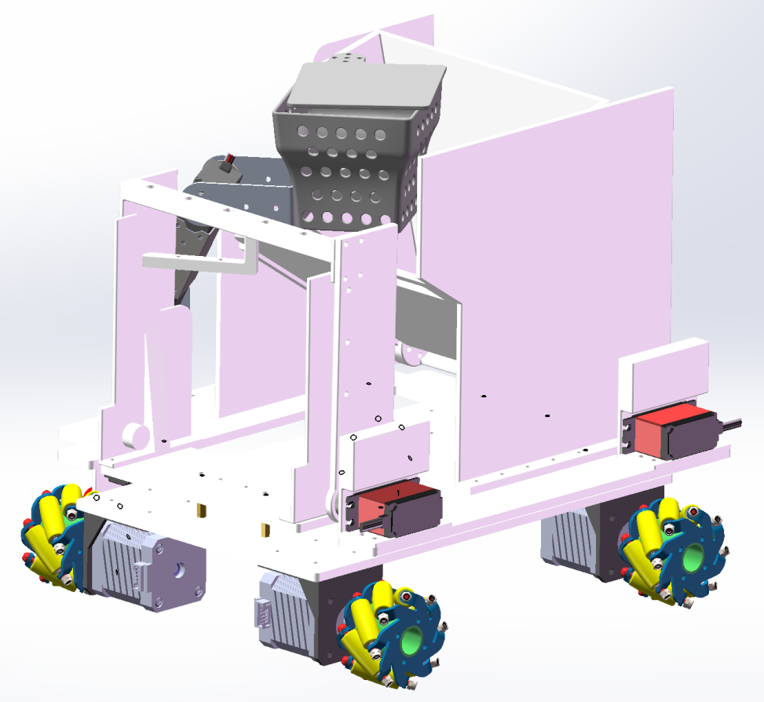

轨迹合成 Complex Motion
什么时候需要这种运动？ 末端要走一条无法用单自由度机构生成的 2D 曲线—— 一行字、一个不规则轮廓、或要绕障的轨迹。两条思路： ① 加自由度（五杆、串联臂）；② 轨迹刻进几何（多杆组合、凸轮连杆、并联机构）。 这一页不止讲原理——7.1~7.4 给你"给定曲线 → 怎么设计出机构"的完整方法论。
本页方案横向对比
四条路线怎么选
| 维度 | 五杆（2 自由度） | 六杆（1 自由度） | 凸轮+连杆 | Delta 并联 |
|---|---|---|---|---|
| 自由度/电机数 | 2 / 2 电机 | 1 / 单电机 | 1 / 单电机 | 3 / 3 电机 |
| 轨迹可编程 | ✓ 实时改频比相位 | ✗ 换曲线=换机构 | ✗ 换曲线=换凸轮 | ✓ 全程序控制 |
| 速度 | 快 | 快 | 最快（高速自动机） | 极快（数十 g） |
| 刚度 | 高（闭环） | 高 | 中 | 中（臂细） |
| 工作空间 | 中（两圆环交集） | 小 | 小 | 小（占地比低） |
| 制造难度 | 中（5 个铰链） | 中高（7 个铰链） | 高（廓形精加工） | 高（球铰/平行四边形） |
| 俱乐部适用 | ●●●○○ | ●●○○○ | ●●○○○ | ●●○○○ |
选路线：轨迹简单重复、要超高节拍 → 凸轮+连杆（工业自动机）； 要可编程、中等节拍 → 五杆或串联臂（我们的选择）； 超高速拾放 → Delta 并联。六杆适合"一条曲线用了几十年"的固定工序（缝纫机）。
优点
- 2 自由度 → 末端轨迹是真正的 2D 曲线
- 闭环连杆：刚性远高于悬臂串联臂
- 两原动件都接地 → 电机不做悬臂负载
缺点
- 需要 2 电机严格协同
- 工作空间形状复杂（两个圆环的交集）
- 轨迹规划比串联臂难（无解析逆解直觉）
适用
- 提速类拾放（频比可调）
- 印花、点胶、绣花走线
- 并联机械手的入门结构
轨迹设计方法论：想要一条曲线，怎么反求机构？
从"看懂动画"到"设计得出"——四把工具：图谱、频比、同源、数值综合
设计含义（倒着用）：想要一条曲线，可以先问"它像哪种连杆曲线"—— 翻图谱找到形似的机构与杆长比，缩放到实际尺寸，就是一个单电机解。 纸上时代的工程师真的用整本《连杆曲线图谱（Atlas of Coupler Curves）》干这事。 下面这张九宫格，就是图谱的一页缩影：
连杆曲线图谱九宫格（3 种杆长比 × 3 个连杆点位置）
- ① 定频比要几个瓣/几拍闭合 → ω₁:ω₂ = m:n 整数比（闭合周期 = 最小公倍数拍；非整数比永不闭合）
- ② 定相位φ 是"形状旋钮"：同相拉长、正交（90°）圆润——拖 hero 动画的 φ 滑块体会
- ③ 定杆长两摇杆 a₁、a₂ 定幅值（工作区域大小）；机架定宽度
- ④ 定连杆比b₁、b₂ 与 C 点在连杆上的位置决定曲线细节
- ⑤ 全周期采样验证数值跑一圈：装配失败 = 连杆不够长，加长 b 直到 0 失败
设计含义（这是它真正值钱的地方）： ① 这个四杆的传动角不好（μmin 太小、传力差）？换成它的同源机构——曲线不变、传动角变好； ② 机构跟障碍/机架干涉？换同源布局绕开。曲线是需求，机构是可选的实现——同源定理给了三个免费备选。
同源机构示意：两个不同的四杆，走出同一条曲线
数值综合实验台：给定点列，拖出机构
轨迹设计最后一步的"人肉版"——你在实验室拖滑块，就是在做优化算法做的事

驱动与安装
多自由度机构的电机布置有自己的讲究
五杆：双电机怎么摆
两台电机同基座对置装在机架两端，两曲柄轴线尽量同高、间距 = 机架长—— 电机都不做悬臂负载，轴承受力好；双电机座一次钻孔定两轴孔（中心距就是机架，孔偏 = 机架偏）。
Delta：三电机上静平台
三台电机均布 120° 装在顶部静平台——动质量只剩三根细臂， 这就是它能到数十 g 加速度的全部秘密。电机离末端越远，惯量越小。
六杆/凸轮连杆：单电机直驱
都是 1 自由度——输入轴（曲柄轴/凸轮轴）= 电机轴，法兰直装或联轴器， 与间歇机构页同款逻辑。高速时同步带隔离振动。
实物制作
杆越多，铰链精度越要命
五杆有 5 个转动副——每个铰 0.1 mm 间隙，末端累计漂移可达 0.5 mm 级（间隙不抵消、走最坏叠加）。 六杆 7 个铰更甚。轨迹精度 = 铰链精度，全铜套化是底线（见右链）。 Delta 的球铰/万向节用鱼眼轴承成品（M3/M4 杆端关节轴承）， 或打印 TPU 弹性铰（柔顺机构思路：免润滑免间隙，但行程小、会疲劳）。
转动副规范 → 底盘与悬挂 · 铰接设计（铜套）Ø6 铜套 + Ø6.4 杆孔 + 0.4 台阶让位 + 六角坑埋螺母——全站铰链的标准做法
| 五杆铰链 | 5 × 铜套铰（全精做） |
| 间隙预算 | 每铰 ≤0.1 mm |
| 杆件 | 激光切割 3 mm 亚克力 |
| Delta 球铰 | 鱼眼轴承（杆端关节） |
| 替代方案 | TPU 弹性铰（免间隙） |